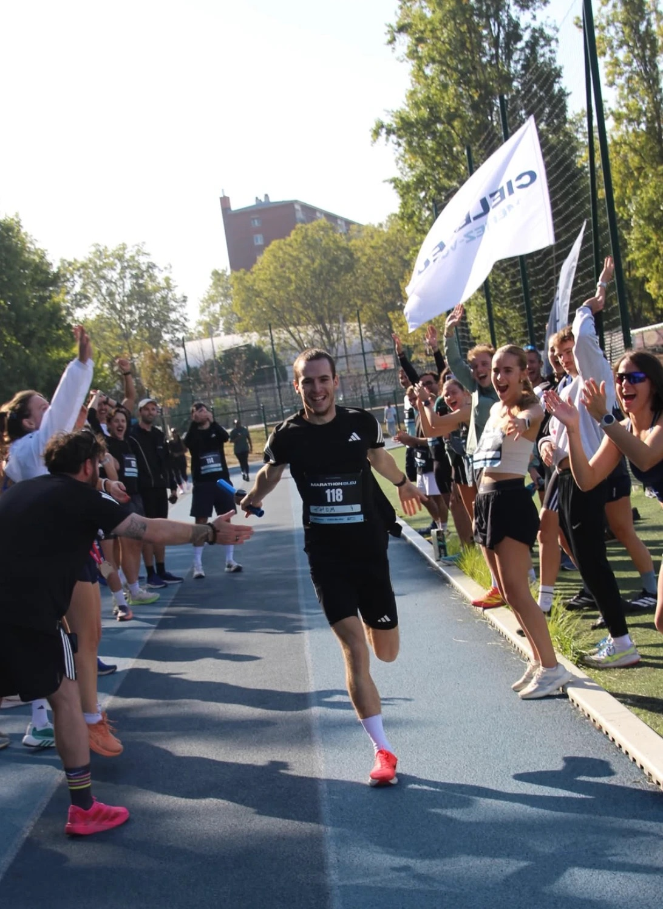

Un marathon, ça se court seul. Le 27 septembre, on a fait l'inverse.
42,195 km · 42 coureurs en relais
Comment ça marche
Sur une piste, un marathon, c'est 105 tours plus 195 mètres. Chacun en a couru un peu plus de deux, par relais de 400 m : on passe le témoin, on file encourager le suivant, et le chrono ne s'arrête jamais.

Une matinée sur la piste bleue
Rendez-vous à 8h30, départ à 9h pile. Pendant plus de deux heures, ça a tourné sans s'arrêter, avec toujours du monde au bord de la piste pour pousser.

Merci
Bravo à tous les coureurs pour l'énergie, et merci aux supporters : vos encouragements ont compté. Merci aussi à 60pourcent, notre partenaire, qui a hydraté les relayeurs.
Rendez-vous l'an prochain pour faire tomber le record.
La rédac bleue